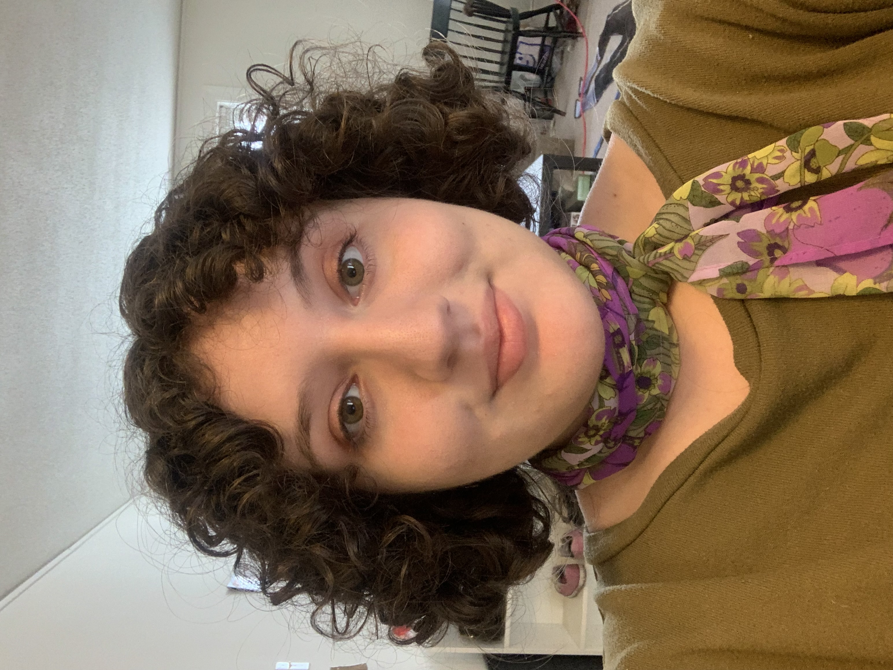

ACADEMICS
I am a junior at Carnegie Mellon. My primary major is Statistics and I have a concentration is Media Design.
Last year I decided it would be a great idea to tack on a third area of study. Now I have an additional major in Decision Science!
I am currently enrolled in 36401, 67240, 88251, 88418, & 80210.
I also have a part time job on campus working at IDeATe!
ABOUT ME

Hello! I'm Amalia. I'm 20 years old and my pronouns are she/her.
I created this website for my Mobile Web Design class (67240) but I hope to continue improving it as a personal project.
I'm from Princeton, NJ and currently have an apartment near my university.
I would love to work in Pittsburgh because I've been having a wonderful time living here. My ideal work location for next summer is Pittsburgh,
but I'm definitely open to going somewhere new.
During my time in college, I've gotten very involved in
cosplay.
It has been a wonderful creative outlet to contrast my STEM classes. Every cosplay that I make challenges me to learn new skills. It involves
painting, sewing, costume patterning, prop making and much more! I am the president of
Cosplay@CMU,
and lead the club on an annual trip to
Katsucon.